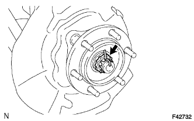
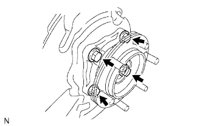

СТУПИЦА ПЕРЕДНЕГО КОЛЕСА > СНЯТИЕ |
| 1. СНИМИТЕ ПЕРЕДНЕЕ КОЛЕСО |
| 2. СНИМИТЕ КОЛЕСНЫЙ ТОРМОЗНОЙ ЦИЛИНДР ЛЕВОГО ДИСКОВОГО ТОРМОЗА В СБОРЕ |
 |
С помощью разрезной головки отсоедините трубопровод тормозной системы от колесного тормозного цилиндра дискового тормоза в сборе.
 |
Выверните 2 болта и снимите колесный тормозной цилиндр дискового тормоза в сборе.
| 3. СНИМИТЕ ПЕРЕДНИЙ ДИСК |
 |
Если диск планируется использовать повторно, нанесите метки на диск и ступицу колеса.
| *1 | Метка |
Снимите передний диск.
| 4. СНИМИТЕ СМАЗОЧНЫЙ КОЛПАЧОК СТУПИЦЫ ПЕРЕДНЕГО КОЛЕСА |
С помощью отвертки и молотка снимите смазочный колпачок ступицы переднего колеса.
| 5. ОТВЕРНИТЕ ГАЙКУ ВАЛА ПЕРЕДНЕЙ ПОЛУОСИ |
|  |
Снимите шплинт и блокировочный колпачок.
Отверните гайку вала передней полуоси.
| 6. СНИМИТЕ СТУПИЦУ ЛЕВОГО ПЕРЕДНЕГО КОЛЕСА В СБОРЕ |
|  |
Выверните 4 болта.
С помощью молотка с пластмассовым покрытием выбейте передний приводной вал из ступицы переднего колеса.
Снимите ступицу переднего колеса и защитный кожух переднего дискового тормоза.
Снимите кольцевое уплотнение.